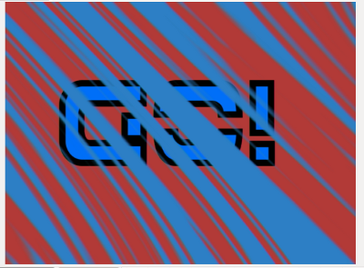

Złożone obrazy
WPROWADZENIE
Kompozytory mają ścieżkę źródłową i docelową. Na osi czasu Compositor jest wyświetlany jako ciemny prostokątny obiekt, który jest wyświetlany na górze dwóch ścieżek. Ścieżka źródłowa to zawsze ta powyżej Kompozytora, ale Ścieżka celu może być dowolną z poniższych ścieżek. Parametry definiujące wynikowy kompozyt edytowane są w zakładce Compositors . Istnieje podtyp Compositors o nazwie Blendery. Blendery wykorzystują standardowe mieszanki, takie jak Add, Softlight i Darken, ale nie oferują transformacji ani żadnej metody kontrolowania ilości mieszania.COMPOSITOR WORKFLOW
Tworzenie Compositor Kliknij prawym przyciskiem myszy na dowolnym klipie na ścieżkach od V5 do V2 i wybierz na przykład Dodaj Compositor -> Dissolve lub Add Blender -> Softlight z popupmenu, aby utworzyć nowego Compositor. Trimmimg lub Przenoszenie Compositor Aby przyciąć punkt początkowy i końcowy Compositora: Naciśnij i przeciągnij lewą myszą w pobliżu końca Compositor na Osi czasu. Aby przenieść Compositor: Naciśnij i przeciągnij lewą mysz w środku Compositor na Osi czasu. Edytowanie parametrów Compositor na karcie Compositors Kliknij dwukrotnie Compositor with Left Mouse . Kliknij prawą mysz na dowolnym Compositor i wybierz Open In Compositor Editor Edytuj parametry za pomocą edytorów wartości. Usuwanie Compositor Kliknij Left Mouse na dowolnym Compositor, aby go wybrać i naciśnij klawisz Delete .COMPOSITOR SĄ WYKONYWANE OD GÓRY DO DOŁU
W Flowblade Movie Editor kolejność renderowania jest od góry do dołu , a nie od dołu do góry, tak jak w Gimpie lub Photoshopie. Podczas próby określonego typu wielowarstwowych kompozytów daje to wyniki, które wydają się nieintuicyjne, chyba że użytkownik jest świadomy renderowania kolejności Compositors.RENDERING COMPOSITED FRAME
Dla każdej klatki sprawdza się, czy na najwyższej ścieżce znajduje się Kompozytor pokrywający tę ramkę. Jeśli taki Compositor zostanie znaleziony, wykonaj kompozyt na torze docelowym. Ramka na torze docelowym jest teraz zmieniona i jeśli ta ramka jest używana jako źródło, używana jest zmieniona wersja Sprawdź, czy klatka na następnej ścieżce poniżej ma komponent i jeśli zostanie znaleziony Compositor, zrób złożony obraz Odbywa się to dla każdego utworu. Obraz wyjściowy jest z najwyższej ścieżki, która ma nośnik na ramie i nie ma kompostora na ramie.PRZYKŁAD: TWORZENIE TRÓJWARSTWOWEGO KOMPOZYTU
W tym przykładzie pokazujemy, w jaki sposób porządek Compositor od góry do dołu wpływa na kompozycję. Staramy się, aby słowo "GO" pojawiło się na tle dwukolorowego tła, łącząc czerwone i niebieskie klipsy kolorowe, korzystając z funkcji "Free Stripes".ELEMENTY MULTIMEDIALNE I POŻĄDANY WYNIK
Aby uzyskać przezroczystość alfa, grafika GO.PNG musi być skomponowana za pomocą funkcji "Dissolve".Klipy: CZERWONE i NIEBIESKIE Klipsy kolorów oraz grafika GO.PNG z przezroczystością alfa
Pożądany rezultat:

KOLEJNOŚĆ WARSTW W STYLU GIMP / PHOTOSHOP DAJE ZŁY WYNIK
Tutaj rozmieściliśmy klipsy na torach, ponieważ układaliśmy warstwy w Gimpie.
Kolejność warstw w stylu Gimp:

To, co dzieje się tutaj, polega na tym, że pierwszy "GO.PNG" jest połączony z klipem kolorowym "RED", a wynikowy obraz jest łączony za pomocą "Free Stripes" na wierzchu "BLUE" Kolorowego klipu. Otrzymujemy zły wynik.
Zły wynik:

PRAWIDŁOWA KOLEJNOŚĆ WARSTW, GDY PORZĄDEK KOMPOZYCJI JEST OD GÓRY DO DOŁU
Tutaj ułożyliśmy klipy w odpowiedniej kolejności dla pożądanego rezultatu.
Prawidłowa kolejność warstw

Tutaj klip koloru "RED" jest najpierw łączony za pomocą "Free Stripes" w "BLUE" Color Clip. Następnie "GO.PNG" jest umieszczany na wierzchu wynikowego obrazu (który jest już renderowany na ścieżce V1) za pomocą funkcji "Dissolve", aby uzyskać ostateczny obraz wyjściowy.
Ścieżka docelowa w Kompozycie "Region" to V1, Ścieżka źródłowa to V3

Pożądany rezultat